Everything cashiers and administrators need to run the till, sell by weight, take payment, and track every transaction — with pictures of every screen.
For CashiersFor AdministratorsHardware SetupTroubleshooting
How to read this guide
Steps you perform are numbered. Buttons and screen labels look like “Open Shift”. Keys on the keyboard look like F12. Every important screen has a picture so you can match what you see.
Part 1
Welcome & the basics
Ariemmas POS is the till software the shop runs on its touchscreen terminals. It records every sale, prints receipts, opens the cash drawer, tracks stock, and shows the owner exactly how much was sold and by whom.
1.1Who uses it
Cashier
Runs the till
Signs in with a cashier login, opens a shift with their name, scans or searches products, weighs butchery items, takes cash or mobile money, and closes the shift at the end of the day.
Administrator
Runs the shop
Adds and prices products, prints barcodes, marks items as sold-by-weight, reads the daily reports (who sold what), exports to Excel, and configures the printer and drawer.
1.2The three things every cashier does, every day
Open a shift when you start — type your name and the cash in the drawer.
Ring up sales all day — scan/search items, take payment, hand over the receipt.
Close the shift when you finish — count the drawer so the totals balance.
Works without internet
The till keeps working even if the internet goes down. Sales are saved on the terminal and sent to the owner’s dashboard automatically when the connection returns.
1.3A note on prices and VAT
The price on the shelf is the price the customer pays. VAT is switched off by default, because the business is new and not yet VAT-registered. With VAT off, receipts simply show the Total — there is no VAT line, and you never calculate anything by hand.
Once the business registers for VAT with ZRA, the owner turns it on with a single switch in Settings → Charge VAT (see section 3.6). From then on prices are treated as VAT-inclusive and the system shows the VAT portion on every receipt automatically. Cashiers don’t need to do anything different either way.
Part 2 · For Cashiers
Cashier Guide
This is everything you do on the till, from signing in to closing your shift. Follow it in order the first few times and it will quickly become second nature.
2.1Signing in
When the terminal is ready you’ll see the sign-in screen. Each person has their own username and PIN — your supervisor gives you yours. (Logins are no longer shown on screen, for security.)
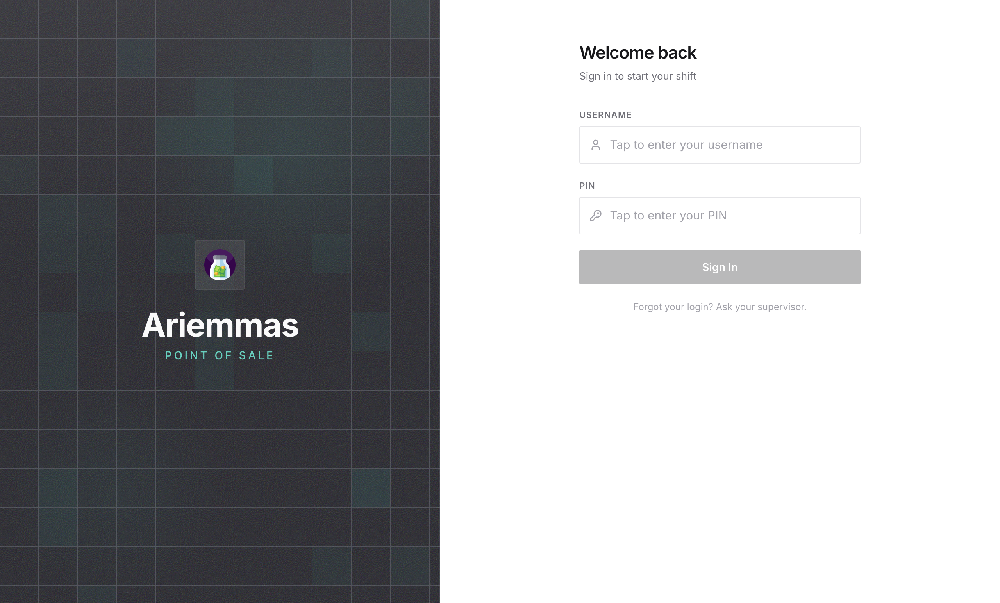
The sign-in screen. Tap the Username and PIN boxes to type with the on-screen keyboard — no Windows keyboard needed.
Tap the Username box and type your username (for example cashier1) on the on-screen keyboard, then tap “Done”.
Tap the PIN box and type your PIN on the keypad.
Tap “SIGN IN”.
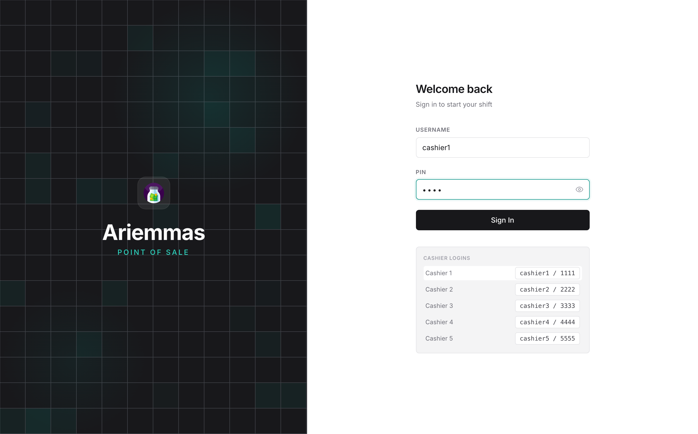
Type your username and PIN on the on-screen keyboard / keypad, then SIGN IN.
Use your own login
Always sign in as yourself. Every sale is tagged with your login, so the owner can see who served each customer. Signing in as someone else makes the reports wrong. Never share your PIN.
2.2Opening your shift
Before you can sell anything you must open a shift. This records who is on the till and how much cash you started with.
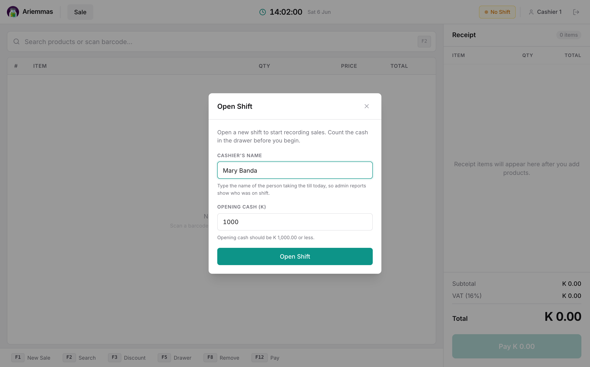
The Open Shift window. It asks for your real name and the opening cash.
If you see “No Shift” at the top right, tap it to open this window.
Tap the “Cashier’s Name” box. An on-screen letters keyboard slides up — type the name of the real person on the till today, for example Mary Banda, then tap “Done”. (The login may be “Cashier 1”, but the owner wants the real name.)
Type the cash counted in the drawer using the number keypad, then tap “OPEN”. The badge at the top changes to “Shift Open”.
No Windows keyboard needed
The till is a touch screen. Letters come from the on-screen keyboard that appears when you tap the name box; numbers come from the keypad. You never need the Windows keyboard.
Why the name matters
Five cashiers share three terminals and swap during the day. The name you type here is how the owner’s report tells who actually rang each sale. Always type your own name.
2.3The sale screen
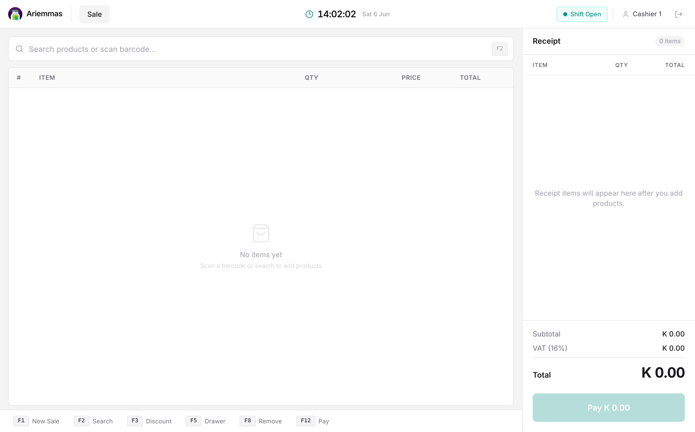
The sale screen. Search bar across the top, the items you add fill the large area in the middle, and the Current Sale panel on the right keeps the running total.
Search bar (top): tap it to bring up the on-screen keyboard, or scan a barcode.
Main area (middle): every item you scan or add appears here, with its price and quantity. Use – / + to change quantity and ✕ to remove a line.
Current Sale (right): a tidy summary of the same items, the Total, and the green Pay button.
Function bar (bottom): the grey buttons — F1 New Sale, F2 Search, F5 Drawer, F8 Remove, F12 Pay.
2.4Adding products to the sale
There are two ways to add an item — whichever is faster for you. Either way, the item shows up both in the large main area and in the Current Sale summary on the right.
A. Scan the barcode. Point the barcode scanner at the product. It’s added instantly.
B. Search by name. Tap “Search for a product” (or press F2). An on-screen keyboard appears — type a few letters and the matching products list below. Tap the one you want to add it.
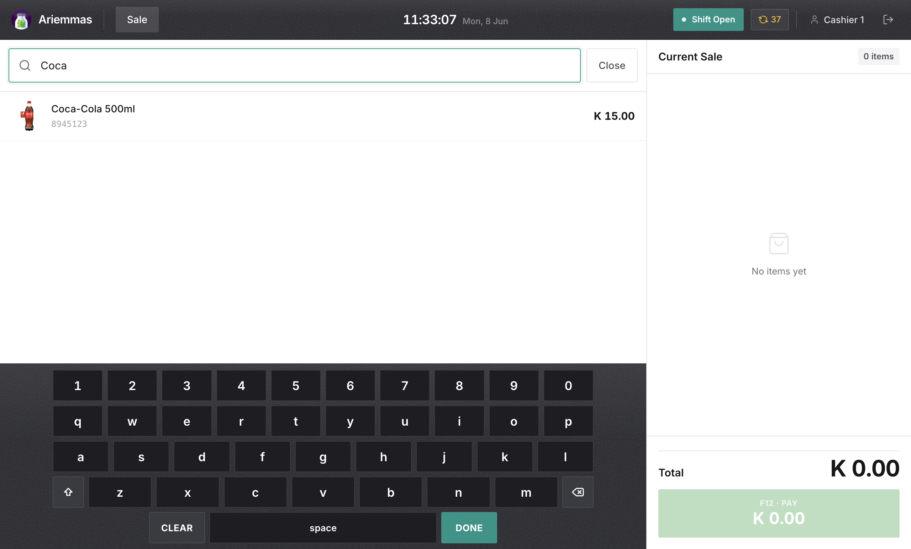
The search keyboard. Type with the on-screen keys; matches show with price and stock. Tap a product to add it, then tap Close when you’re done searching.
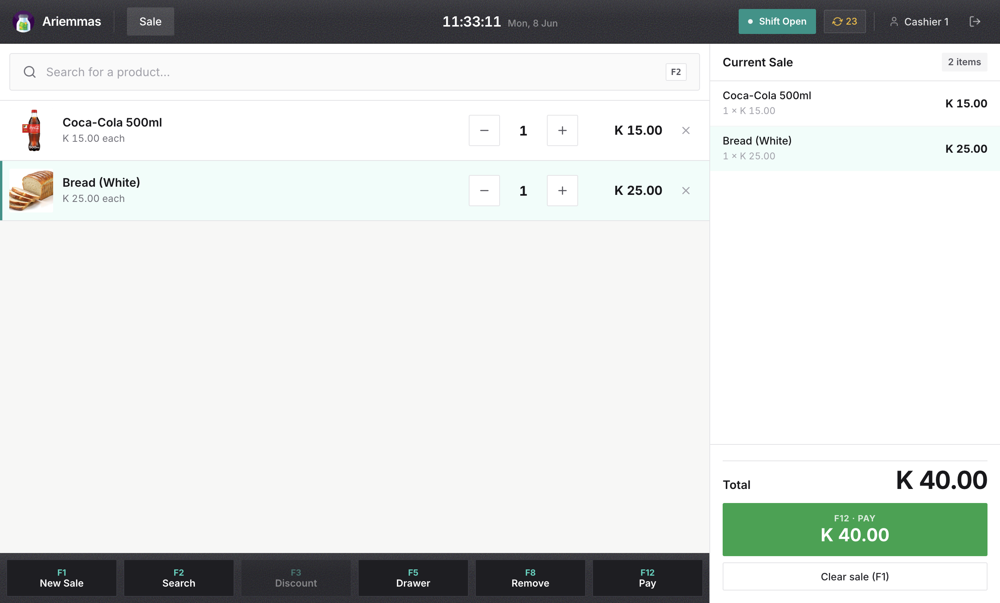
Items added to the sale. Change quantity with – / + in the main area, or remove a line with ✕. The Current Sale total on the right updates automatically.
Handy keysF2 jump to search · F8 remove the selected line · F1 clear the whole sale · F12 take payment.
2.5Selling by weight — the butchery
Meat and other items sold by weight work a little differently. The price you see is the price per kilogram, and you tell the till how much the item weighs.
Weigh the item on the shop scale. The scale shows the weight, for example 0.450 kg. (The scale is separate — the till does not read it automatically.)
Scan or search the item as normal — for example T-Bone Steak.
Because it’s a weighed item, a “Weigh item” window pops up.
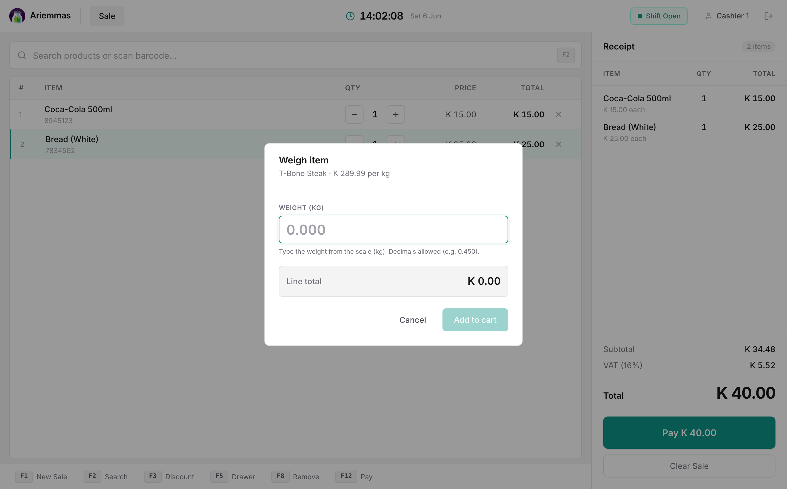
The Weigh item window. It shows the item name and the price per kg at the top.
Type the weight from the scale into “Weight (kg)” — for example 0.450. Use a dot for the decimal.
The Line total updates as you type, so you can check it before adding.
Tap “Add to cart” (or press Enter).
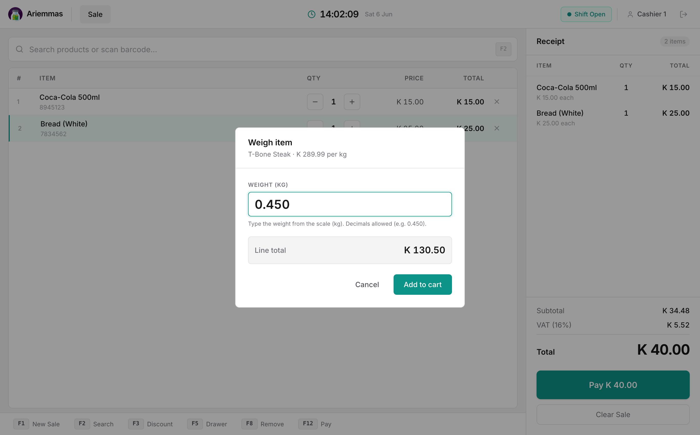
0.450 kg of T-Bone at K 289.99/kg = K 130.50, shown live before you add it.
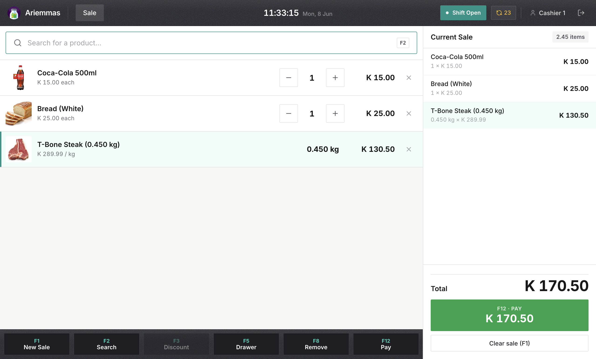
The weighed item in the cart. It reads “T-Bone Steak (0.450 kg)” so it’s clear how much was sold.
Careful: kilograms, not grams
The scale shows kilograms. If it reads 0.450, type 0.450 — not 450. Typing 450 would charge the customer for 450 kilograms. If the line total looks far too big, you typed grams by mistake — tap ✕ and re-do it.
Each weighing is its own line
If a customer buys two separate cuts of the same meat, weigh and add them one at a time. Each becomes its own line, so you can sell different weights of the same product in one sale.
2.6Taking payment
When the cart is complete, tap the green “Pay” button (or press F12).
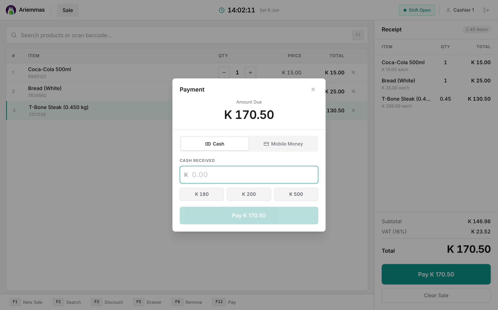
The payment window. Choose Cash or Mobile Money. The amount due is shown big at the top.
For a cash payment:
Type the cash the customer handed you into “Cash Received”, or tap one of the quick amounts (K 50, K 100, K 500…).
The Change to give back is worked out for you.
Tap “Pay” to finish.
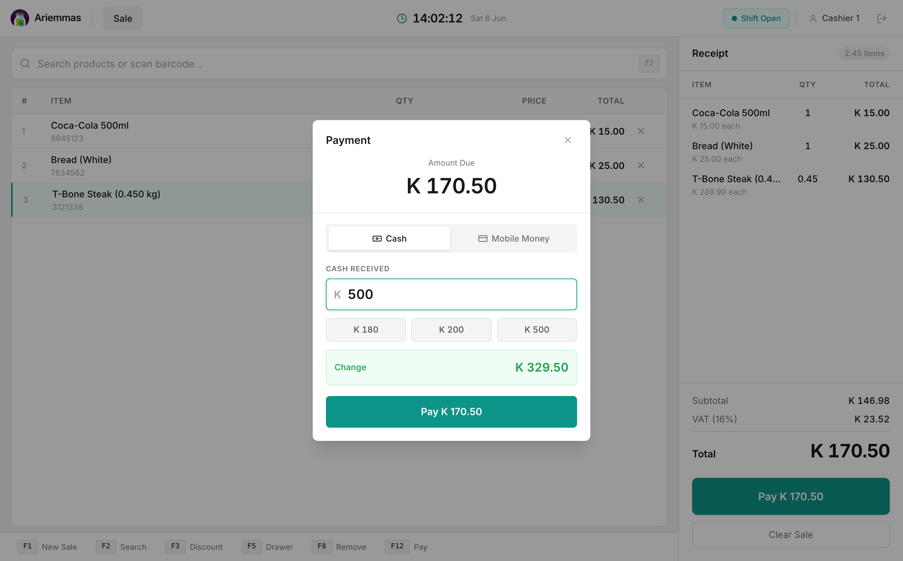
Customer paid K 500 on a K 170.50 sale → the till shows K 329.50 change.
For mobile money: tap Mobile Money, enter the reference number from the customer’s payment confirmation, and tap Pay.
2.7Receipt & cash drawer
As soon as the sale is finished:
The receipt prints automatically — hand it to the customer. It shows the cashier, the date and time in Mongu time, and the items.
On a cash sale, the cash drawer opens automatically so you can put the money in and take out change.
A “Thank You” screen confirms the sale, showing the total, amount paid, and change.
Opening the drawer on its own
Need the drawer without a sale (for example to give change)? Tap F5Drawer on the bottom bar. A small message confirms “Cash drawer opened”. If it says “No printer set”, the drawer can’t open until a printer is chosen in Settings → Hardware (the drawer is wired to the printer).
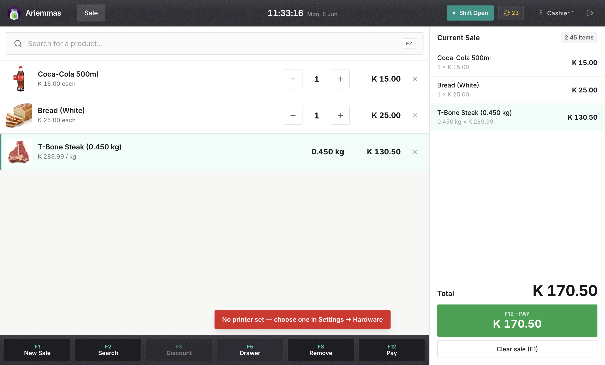
The bottom function bar. Tapping F5 Drawer shows a “Cash drawer opened” confirmation. The same bar has New Sale, Search, Remove and Pay.
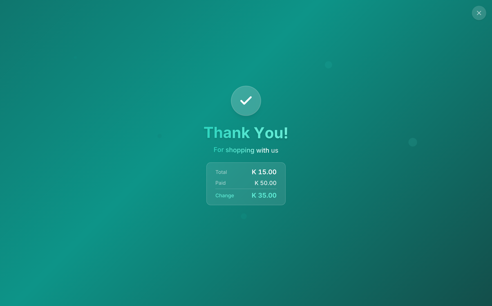
Sale complete. The screen confirms total, paid, and change, then returns to a fresh sale.
2.8Closing your shift
At the end of your time on the till, close your shift so the day’s cash can be checked.
Tap the “Shift Open” badge at the top right.
Count the cash in the drawer and type it into “Closing Cash”.
Add a note if anything unusual happened (optional).
Tap “Close Shift”. The system compares your count to what it expected and records any difference.
Swapping cashiers on one terminal
When you hand the till to the next person: close your shift, then sign out (the arrow icon, top right). The next cashier signs in with their own login and opens their own shift.
2.9The rules — read this once
Rule
Why
Sign in as yourself
Every sale is tagged to your login for the owner’s report.
Type your real name at shift open
So the report shows the person, not just “Cashier 1”.
One cashier login, one terminal at a time
If you’re already signed in on another till, the system will stop a second sign-in with the same login.
Check the weight before adding meat
Kilograms, not grams. A wrong weight overcharges the customer.
Close your shift before handing over
So the drawer balances against your sales.
Part 3 · For Administrators
Administrator Guide
There are two admin logins (the owner and the supervisor). Both PINs — and every cashier login — are listed in the credentials file ariemmas-credentials.txt, saved to the Downloads folder when the app is first installed. Admins see extra tabs: Products, Reports, and Settings.
3.1Managing products
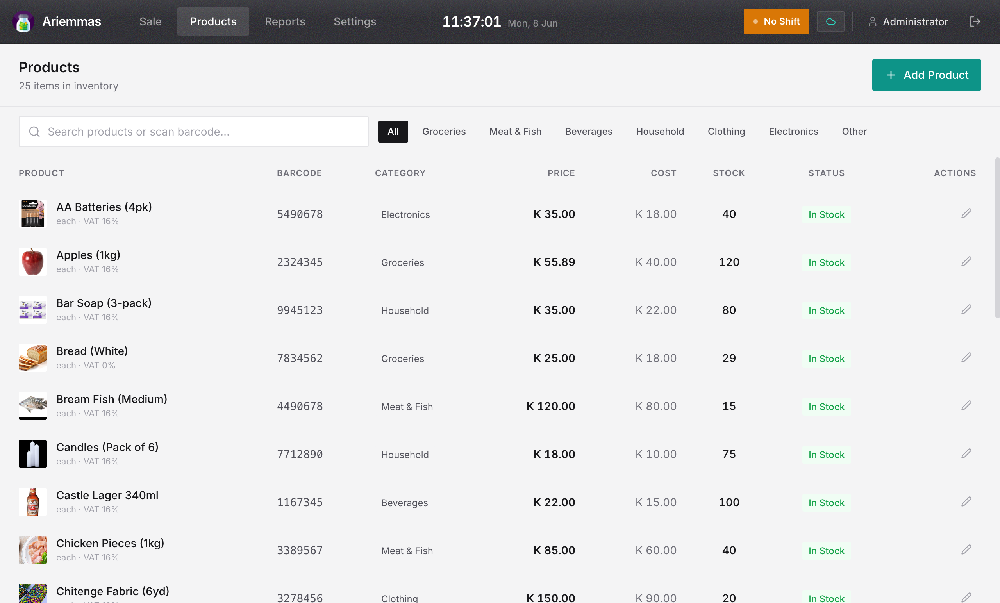
The Products screen. Every item with its barcode, price, stock and status. Tap “Add Product” to create one, or the pencil to edit.
Go to the Products tab.
Tap “Add Product” (top right) to add a new item, or the pencil icon to edit an existing one.
Fill in the name, price, category, stock and VAT rate, then tap “Add Product” / “Update Product”.
3.2Generating & printing barcodes
For items you prepare in-store (like home-made food) that have no barcode, the system can make one for you and you can print it as a label.
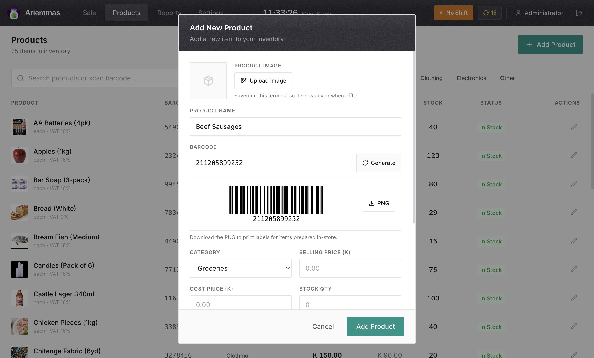
Add/Edit Product. Tap “Generate” to create a barcode, see it previewed, then tap “PNG” to download a printable label.
In the product window, tap “Generate” next to the barcode field — a unique barcode is created.
The barcode preview appears below.
Tap “PNG” to download the barcode image, then print it and stick it on the product.
Works offline The barcode generator needs no internet — it works on the terminal at any time.
3.3Setting up a butchery (weighed) item
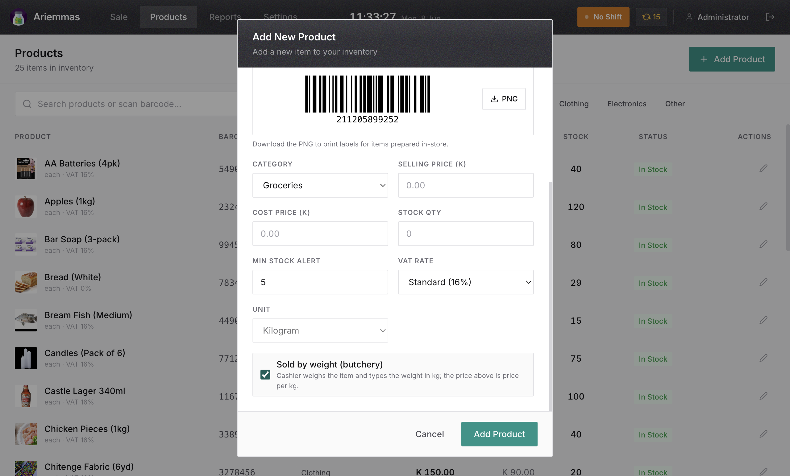
Tick “Sold by weight (butchery)”. The unit switches to kg and the price becomes price per kg.
Add or edit the product (for example, T-Bone Steak).
Set the Selling Price to the price per kilogram.
Tick “Sold by weight (butchery)” near the bottom.
Save. Now, whenever a cashier adds this item, the Weigh item window appears automatically (see section 2.5).
3.4Reports — who sold what
The Reports tab is where the owner sees the day’s trading. Pick a date at the top right; everything updates for that day.
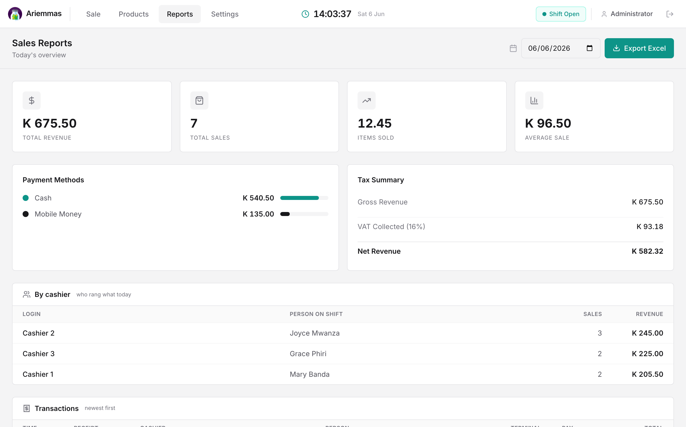
Daily overview. Total revenue, number of sales, items sold, average sale, the cash/mobile split, and the VAT summary.
Scroll down for the part that matters most for staff accountability — By cashier and the full Transactions list.
By cashier. Each login, the real person on shift, how many sales they made and their total — for example Joyce Mwanza: 3 sales, K 245.00.
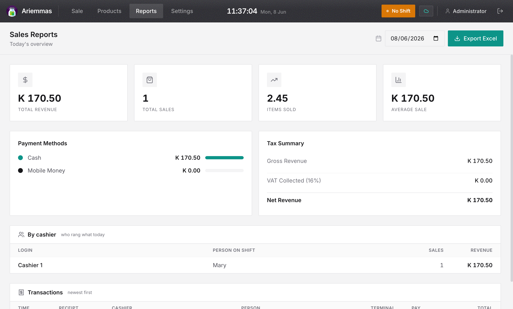
Every transaction. Time, receipt number, cashier login, the person on shift, terminal, payment method and total — newest first.
This is exactly how the owner answers “who served this customer and on which till?” — the cashier login and the typed name are recorded on every single sale, even across the different terminals.
3.5Exporting to Excel
Pick the date you want.
Tap “Export Excel” (top right of Reports).
A spreadsheet is saved with two sheets: a Sales Summary (every receipt with cashier, person on shift, terminal, payment and totals) and a Line Items sheet (every product sold).
Good for record-keeping Export at the end of each day or week and keep the files as the shop’s sales record and for ZRA bookkeeping.
3.6Settings & hardware
The Settings tab holds the shop details on the receipt, cash-drawer alerts, and the hardware controls.
Settings. Shop name, address and details printed on receipts, plus cash-alert options.
3.6.1Turning VAT on or off
VAT ships switched off, which is correct while the business is not yet VAT-registered. With VAT off there is no VAT line on receipts — customers just see the Total.
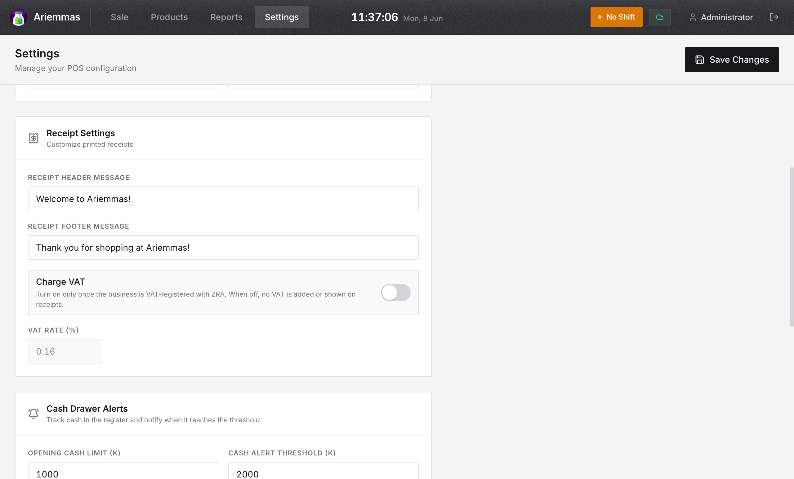
The “Charge VAT” switch. In Settings → Receipt Settings. Off (grey) = no VAT. On (teal) = VAT is calculated at the rate below and shown on receipts.
Leave “Charge VAT”off until the business is registered for VAT with ZRA.
When you register, switch it on, check the VAT Rate (16% in Zambia), and tap Save.
From then on every receipt shows the VAT portion automatically. Shelf prices don’t change — they’re treated as VAT-inclusive.
3.6.2Printer & drawer
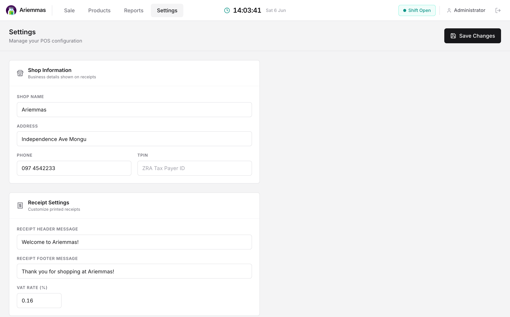
Hardware section. Choose the receipt printer, then use Test Print and Open Drawer to confirm the hardware works.
Under Hardware → Active Printer, pick your receipt printer from the list.
Tap “Test Print” — a test slip should print.
Tap “Open Drawer” — the cash drawer should pop open.
Part 4 · Setup
Hardware: printer & cash drawer
This is a one-time setup, usually done by the administrator when a terminal is installed.
4.1How the pieces connect
The important thing to understand: the cash drawer is opened by the printer, not the terminal. The drawer’s cable plugs into the printer, and the printer sends the pulse that pops it open when a receipt prints.
Cable
Plugs into
Printer power
Wall socket → round power port on the printer
Printer → PC (USB)
The square USB-B port on the printer → the terminal
Cash drawer cable
The white “DK / Cash Drawer” port on the printer — not the LAN port, not the touchscreen
The drawer cable looks like a network cable but isn’t
It’s a telephone-style (RJ11/RJ12) plug — slightly narrower than a network (LAN) cable. It must go into the printer’s white drawer port. Plugged into the terminal or the LAN port, the drawer will never open.
4.2First-time setup checklist
Plug the drawer cable into the printer’s white DK port.
Connect the printer to the terminal by USB and switch it on.
On Windows, make sure the printer appears under Printers & scanners and prints a Windows test page. (Install the printer’s driver if it doesn’t show up.)
In the app, go to Settings → Hardware, choose the printer, and run Test Print and Open Drawer.
Once it’s set up Every cash sale prints the receipt and opens the drawer automatically — cashiers don’t need to do anything extra.
Part 5
Troubleshooting & FAQ
Problem
What to do
“Invalid username or PIN”
Re-type your username and PIN carefully (your supervisor has them). After 3 wrong tries the login locks for 5 minutes. If it still fails, ask the admin to confirm your login is active.
It won’t let me sign in — says I’m already signed in elsewhere
Your login is open on another terminal. Close the shift and sign out there first, or wait a few minutes for it to release.
The cash drawer didn’t open
Check the drawer cable is in the printer’s white DK port. The drawer only opens on cash sales and only when the receipt prints.
The receipt didn’t print
Check the printer is on, has paper, and is selected in Settings → Hardware. Run Test Print.
A meat sale total looks far too high
You likely typed grams instead of kilograms. Remove the line (✕) and re-add it — type kilograms, e.g. 0.450.
The “Pay” button is greyed out
Either the cart is empty or no shift is open. Add an item and make sure the badge says “Shift Open”.
I can’t see Products / Reports / Settings
Those are admin-only. Sign in with the admin login.
The internet is down
Keep selling — the till works offline and syncs automatically when the connection returns.
Frequently asked
Do I need internet to sell? No. The till works fully offline and catches up later.
Can two cashiers use the same login? No — one login works on one terminal at a time, on purpose, so sales are tracked to the right person.
What if I make a mistake on a line? Tap the ✕ on that line to remove it, or F1 to clear the whole sale and start again.
Why is there no VAT on the receipt? VAT is switched off until the business is registered for VAT. The owner can turn it on any time in Settings → Charge VAT. Cashiers don’t need to do anything differently.
Part 6
Quick reference card
Print this page and pin it next to each till.
Keyboard shortcuts
F1
Clear / new sale
F2
Jump to search
F5
Open cash drawer
F8
Remove selected line
F12
Take payment
Everyday checklist
☐ Sign in as yourself ☐ Open shift — type your name ☐ Enter opening cash ☐ Sell all day ☐ Close shift & count drawer ☐ Sign out when handing over
Selling by weight, in three steps
Weigh on the scale (e.g. 0.450 kg).
Scan/search the item → the Weigh item window opens.
Type the kilograms (0.450), check the total, Add to cart.
Golden rules
Always sign in as yourself and type your real name at shift open.
Weighed items are in kilograms — never grams.
Close your shift before you hand the till to the next person.
Need help?
Show this guide to the administrator, or contact the system supplier. Keep the admin credentials file (saved in the Downloads folder) somewhere safe and private.